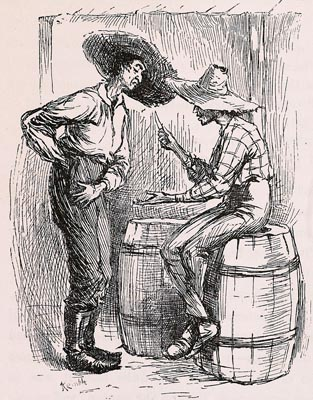

" . . . [loafers] gaping and yawning and stretching -- a
mighty ornery lot . . . There was as many as one loafer leaning
up against every awning-post, and he most always had his hands in
his britches pockets, except when he fetched them out to lend a
chaw of tobacco or scratch."